Examples#
The following examples show how pytransform3d can be used.
Matplotlib Animations#
Animate Rotation
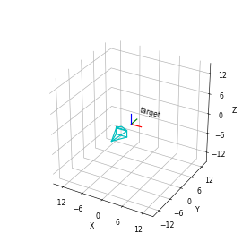
Animate Camera
Animate Trajectory
Quaternion Integration
Interpolate Between Axis-Angle Representations
Interpolate Between Axis-Angle Representations
Interpolate Between Quaternion Orientations
Interpolate Between Quaternion Orientations
GUI Applications#
Matplotlib Figures#
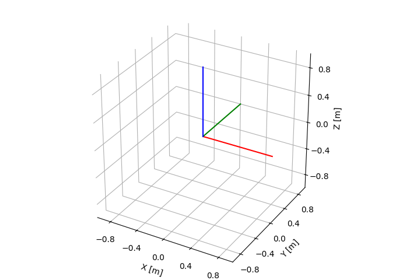
Plot Transformation
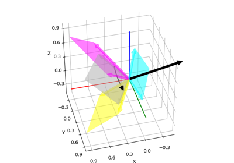
Plot Bivector


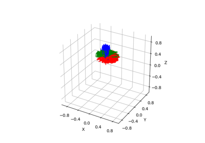
Sample Transforms


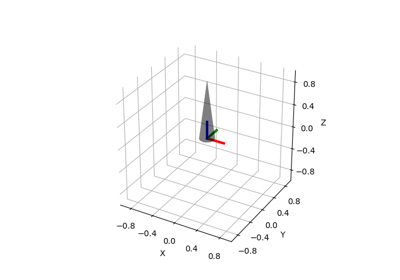
Plot Mesh

Axis-Angle Representation from Two Direction Vectors
Axis-Angle Representation from Two Direction Vectors


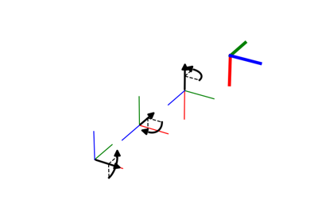
Euler Angles


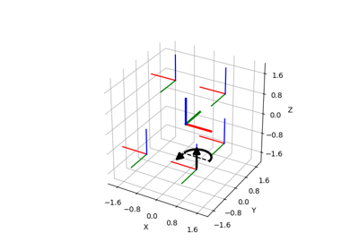
Compare Various Definitions of Rotations
Compare Various Definitions of Rotations
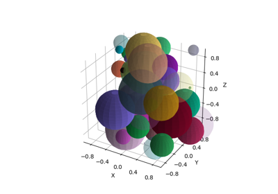
Plot Multiple Spheres


Random Trajectories

Plot Polar Decomposition
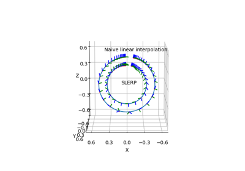
Quaternion SLERP
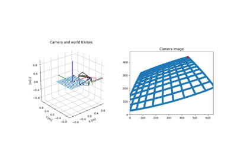
Camera Transform


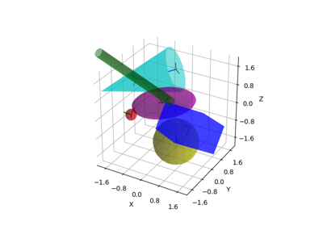
Plot Random Geometries


Convention for Rotation: Passive / Active, Extrinsic / Intrinsic
Convention for Rotation: Passive / Active, Extrinsic / Intrinsic